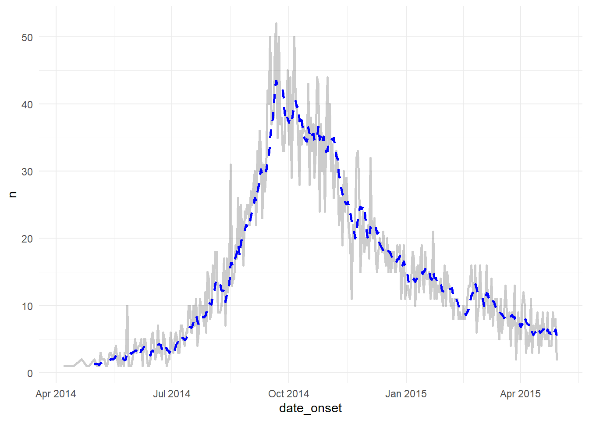
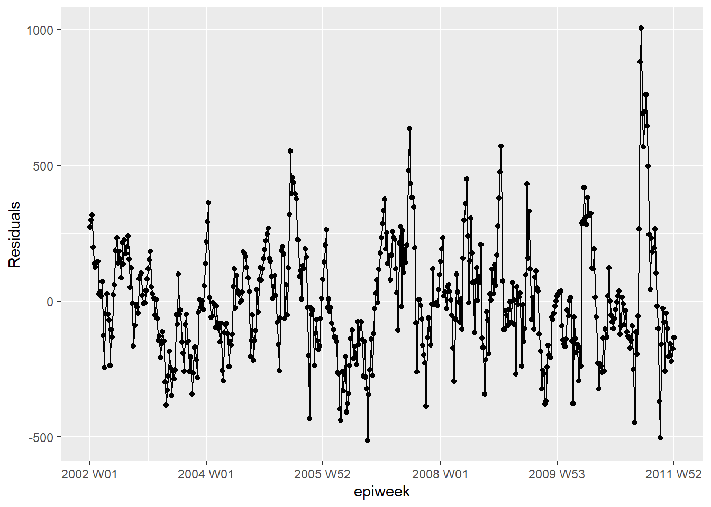
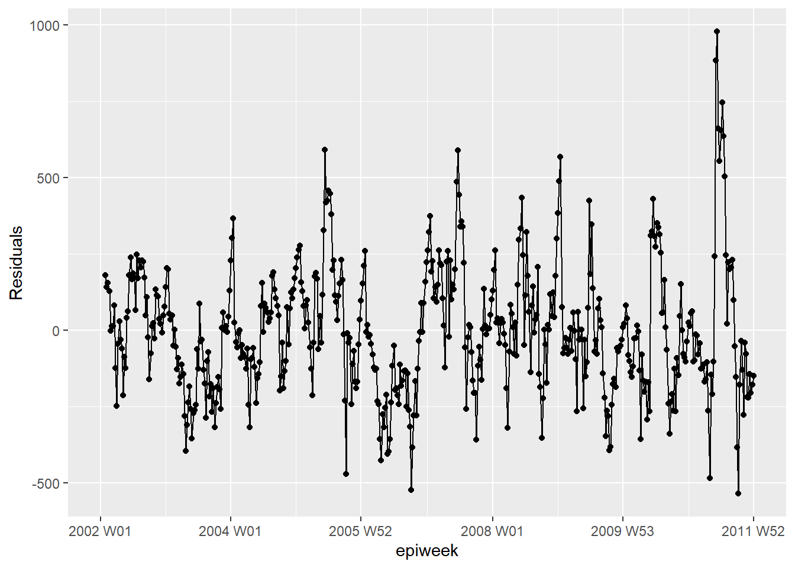
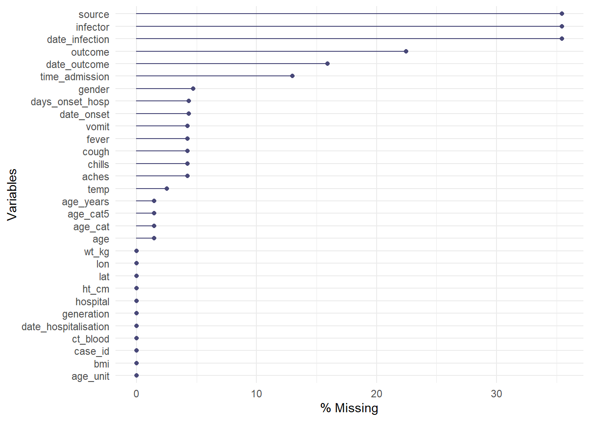
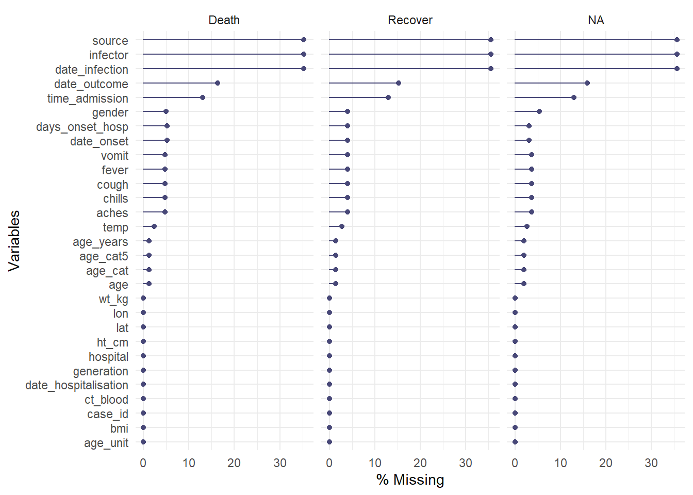
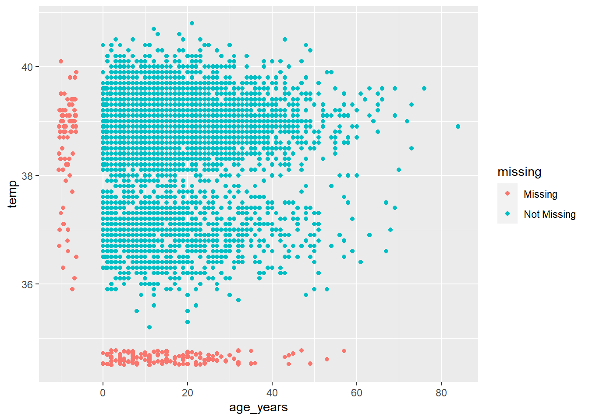
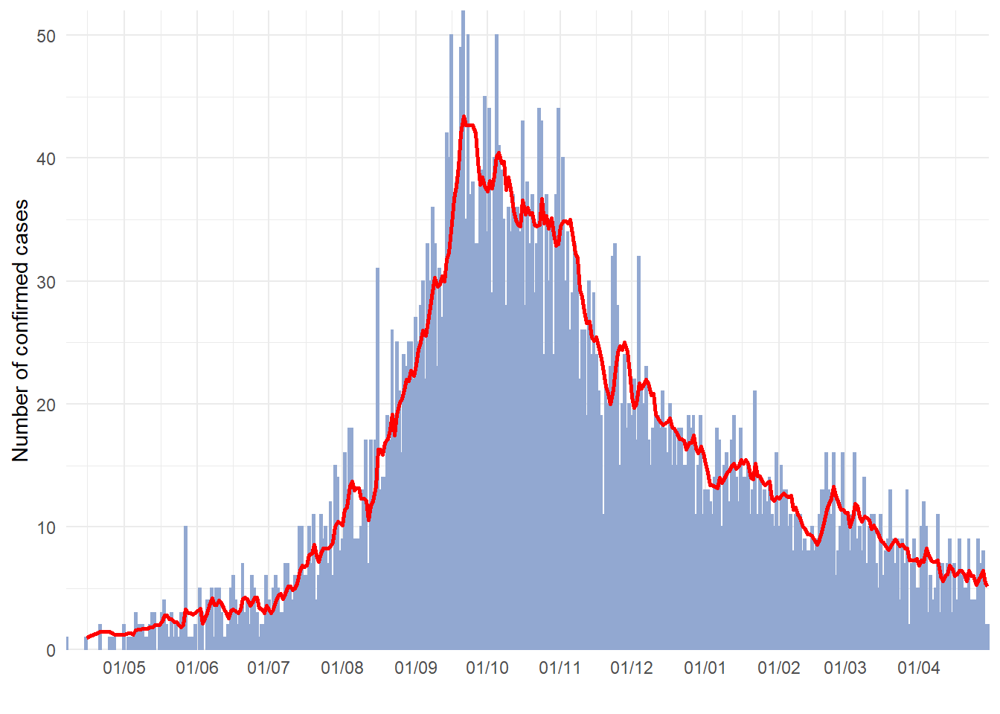

20 Dữ liệu Missing


Chương này sẽ bao gồm cách để:
- Đánh giá số liệu bị thiếu
- Lọc ra các hàng có số liệu bị thiếu
- Vẽ biểu đồ số liệu bị thiếu theo thời gian
- Xử lý cách
NAđược hiển thị trong biểu đồ
- Thực hiện gán số liệu bị thiếu: MCAR, MAR, MNAR
20.1 Chuẩn bị
Gọi package
Đoạn code này hiển thị cách gọi các package cần thiết cho phân tích. Trong cuốn sổ tay này, chúng tôi nhấn mạnh đến hàm p_load() từ package pacman, mà hàm này sẽ cài đặt package khi cần thiết và gọi nó ra để sử dụng. Bạn cũng có thể gọi các gói lệnh đã cài đặt bằng hàm library() trong base R. Xem chương R cơ bản để biết thêm thông tin về các R packages.
Nhập số liệu
Chúng ta nhập bộ số liệu của các ca bệnh được mô phỏng từ một vụ dịch Ebola. Để tiện làm theo, bấm để tải số liệu linelist “đã làm sạch” (as .rds file). Nhập số liệu này bằng hàm import() trong package rio (nó chấp nhận nhiều loại tập tin như .xlsx, .rds, .csv – xem chi tiết trong chương Nhập xuất dữ liệu).
Bên dưới là hiển thị của 50 hàng đầu tiên của bộ số liệu linelist.
Chuyển đổi missing khi nhập dữ liệu
Khi nhập số liệu, hãy lưu ý các giá trị có thể được phân loại là các giá trị missing. Ví dụ: 99, 999, “Missing”, ô trống (““), hoặc các ô có khoảng trống (” “). Bạn có thể chuyển đổi các giá trị này thành NA (cách R lưu trữ số liệu missing) trong khi thực hiện lệnh nhập số liệu.
Xem phần nhập số liệu trong chương Dữ liệu missing để biết thêm chi tiết, vì cú pháp chính xác sẽ khác nhau tùy theo loại tệp.
20.2 Giá trị missing trong R
Sau đây chúng ta sẽ khảo sát rõ cách số liệu bị thiếu được trình bày và đánh giá trong R bởi các giá trị liền kề và các hàm.
NA
Trong R, giá trị bị thiếu được đại diện bởi một giá trị dành riêng (đặc biệt) - NA. Lưu ý rằng giá trị này được nhập không có dấu ngoặc kép. “NA” là khác biệt và cũng chỉ là một giá trị ký tự bình thường (như lời bài hát của Beatles trong bài Hey Jude).
Số liệu của chúng ta có thể có các cách khác để biểu thị giá trị bị thiếu, như là “99”, hoặc “Giá trị bị thiếu / Missing”, hoặc “Không biết / Unknown”, thậm chí chúng ta có giá trị ký tự trống “” như “để trống / blank”, hoặc một khoảng trắng ” “. Cần lưu ý những giá trị này và xem xét có nên chuyển đổi chúng thành NA khi nhập vào R hoặc trong khi làm sạch số liệu bằng hàm na_if() hay không.
Trong lúc làm sạch số liệu, chúng ta cũng có thể muốn chuyển đổi số liệu theo một cách khác – chuyển đổi tất cả NA thành “Missing” hoặc làm tương tự với hàm replace_na() hoặc với hàm fct_explicit_na() cho các factors.
Các phiên bản của NA
Trong hầu hết trường hợp, NA đại diện cho giá trị bị thiếu và mọi thứ đều vận hành tốt. Tuy nhiên, trong một số trường hợp, chúng ta có thể gặp phải những tình huống khó khăn đối với các biến thể của NA mà đặc trưng cho một lớp đối tượng (ký tự, số, .v.v.). Điều này rất hiếm, nhưng chúng ta cần phải lưu ý.
Tình huống điển hình cho trường hợp này là khi tạo một cột mới bằng hàm case_when() trong package dplyr. Như được mô tả trong chương Làm sạch số liệu và các hàm quan trọng, hàm này lượng giá mọi hàng trong data frame, đánh giá xem các hàng có đáp ứng với các tiêu chí logic cụ thể hay không (phía bên phải của code), và gán giá trị chính xác mới (phía bên trái của code). Quan trọng: tất cả các giá trị bên phải phải cùng một lớp biến số.
linelist <- linelist %>%
# Create new "age_years" column from "age" column
mutate(age_years = case_when(
age_unit == "years" ~ age, # if age is given in years, assign original value
age_unit == "months" ~ age/12, # if age is given in months, divide by 12
is.na(age_unit) ~ age, # if age UNIT is missing, assume years
TRUE ~ NA_real_)) # any other circumstance, assign missingNếu bạn muốn NA ở phía bên phải, có thể cần phải chỉ định một trong các tùy chọn đặc biệt của NA được liệt kê bên dưới. Nếu các giá trị bên phải khác là ký tự, cân nhắc sử dụng “Missing” hoặc sử dụng NA_character_. Nếu chúng là các giá trị số, sử dụng NA_real_. Nếu tất cả các giá trị là ngày tháng hoặc logic, chúng ta có thể sử dụng NA.
NA- dùng cho biến ngày tháng hoặc biến số logic TRUE/FALSENA_character_- dùng cho biến số ký tự
NA_real_- dùng cho biến dạng số
Một lần nữa, chúng ta sẽ không gặp các loại biến thể này trừ khi chúng ta sử dụng hàm case_when() để tạo biến mới. Xem phần Tài liệu về NA trong R để biết thêm thông tin.
NULL
NULL là một giá trị dành riêng khác nữa trong R. Nó đại điện cho một mệnh đề không đúng cũng không sai. Nó là kết quả của các biểu thức hoặc hàm có giá trị không xác định. Nói chung, không gán NULL như một giá trị, trừ khi viết hàm hoặc khi viết mộ [Ứng dụng shiny][Dashboards with Shiny] để trả về NULL trong các tình huống cụ thể.
Null có thể được đánh giá bằng cách sử dụng hàm is.null() và có thể chuyển đổi thành bằng hàm as.null().
Xem bài viết trên blog này on để biết về sự khác biệt giữa NULL và NA.
NaN
Các giá trị không thể được đại diện bằng một giá trị đặc biệt NaN. Một ví dụ cho giá trị này là khi chúng ta bắt buộc R chia 0 cho 0. Chúng ta có thể đánh giá giá trị này bằng cách dùng hàm is.nan(). Chúng ta cũng có thể gặp các hàm bổ sung bao gồm is.infinite() và is.finite().
Inf
Inf đại diện cho giá trị vô hạn như là khi chia một số nào đó cho 0.
Một ví dụ về cách mà giá trị này ảnh hưởng đến số liệu của chúng ta: giả sử chúng ta có một véctơ hay một cột z chứa các giá trị sau: z <- c(1, 22, NA, Inf, NaN, 5)
Nếu bạn muốn sử dụng hàm max() của cột bên trên để tìm giá trị lớn nhất, bạn có thể sử dụng na.rm = TRUE để loại bỏ NA khỏi phép tính, nhưng Inf và NaN vẫn còn, và Inf sẽ được trả về. Để giải quyết vấn đề này, chúng ta có thể sử dụng dấu ngoặc vuông [ ] và hàm is.finite() để tạo tập hợp con mà chỉ có các giá trị hữu hạn được sử dụng để tính toán: max(z[is.finite(z)]).
Các ví dụ
| Lệnh trong R | Đầu ra |
|---|---|
5 / 0 |
Inf |
0 / 0 |
NaN |
5 / NA |
NA |
5 / Inf |0NA - 5|NAInf / 5|Infclass(NA)| "logical"class(NaN)| "numeric"class(Inf)| "numeric"class(NULL)` |
“NULL” |
“NAs introduced by coercion (NAs được tạo ra do ép buộc)” là một cảnh báo phổ biến. Điều này có thể xảy ra khi chúng ta cố gắng thực hiện một chuyển đổi không hợp lệ như chèn một giá trị ký tự vào trong một véctơ dạng số.
## Warning: NAs introduced by coercion## [1] 10 20 NA 40NULL được bỏ qua trong một véctơ.
## [1] 25 NA 10Phương sai của một số cho kết quả là NA.
## [1] NA20.3 Các hàm hữu dụng
Dưới đây là các hàm hữu dụng trong base R khi đánh giá hoặc xử lý các giá trị bị thiếu:
is.na() và !is.na()
Sử dụng hàm is.na() để nhận ra các giá trị bị thiếu hoặc sử dụng hàm đối của nó (với dấu ! ở phía trước) để nhận ra các giá trị không phải là missing. Cả hai hàm trên đều trả kết quả về một giá trị logic (TRUE hoặc FALSE). Nhớ rằng bạn có thể dùng hàm sum() đối với véc tơ kết quả/đầu ra để đếm số lượng TRUE, vd: sum(is.na(linelist$date_outcome)).
## [1] FALSE FALSE FALSE TRUE FALSE TRUE FALSE## [1] TRUE TRUE TRUE FALSE TRUE FALSE TRUE## [1] 2na.omit()
Hàm này, nếu được áp dụng trên một data frame, sẽ loại bỏ các hàng có bất kỳ giá trị nào bị thiếu. Hàm này cũng từ base R.
Nếu áp dụng cho một véctơ, hàm này sẽ loại bỏ các giá trị NA của véctơ này. Ví dụ:
## [1] 1 4 56 5 22
## attr(,"na.action")
## [1] 4 6
## attr(,"class")
## [1] "omit"drop_na()
Đây là một hàm của package tidyr mà rất hữu dụng trong một [pipeline làm sạch số liệu][Cleaning data and core functions]. Nếu thực hiện hàm với dấu ngoặc trống, nó sẽ loại bỏ các hàng có bất kỳ giá trị nào bị thiếu. Nếu cụ thể tên cột trong dấu ngoặc, các hàng nào có giá trị bị thiếu trong những cột này sẽ bị loại bỏ. Chúng ta có thể sử dụng cú pháp “tidyselect” để chỉ định các cột này.
na.rm = TRUE
Khi chúng ta thực hiện một hàm toán học như max(), min(), sum() hoặc mean(), nếu có sự hiện diện của bất kỳ giá trị NA, kết quả sẽ là NA. Cách xử lý mặc định này là có chủ ý để cảnh báo chúng ta khi có số liệu bị thiếu.
Bạn có thể tránh việc này bằng cách loại bỏ các giá trị bị thiếu ra khỏi phép tính. Để thực hiện, hãy thêm đối số na.rm = TRUE (“na.rm” là viết tắt của “remove NA”).
## [1] NA## [1] 17.620.4 Đánh giá tính không đầy đủ của một data frame
Bạn có thể sử dụng package naniar để đánh giá và trực quan hóa các giá trị bị thiếu trong bộ số liệu linelist.
Định lượng tính không đầy đủ
Để tìm phần trăm của tất cả các giá trị bị thiếu, sử dụng hàm pct_miss(). Để biết số lượng bị thiếu, sử dụng hàm n_miss().
## [1] 6.688745Hai hàm bên dưới trả về phần trăm số hàng có bất kỳ giá trị bị thiếu hoặc hoàn toàn đầy đủ. Hãy nhớ rằng NA có nghĩa là giá trị missing, và `"" hoặc " " sẽ không được đếm là giá trị missing.
## [1] 69.12364# Percent of rows that are complete (no values missing)
pct_complete_case(linelist) # use n_complete() for counts## [1] 30.87636Trực quan hóa tính không đầy đủ
Hàm gg_miss_var() sẽ hiển thị cho chúng ta số lượng (hoặc %) của các giá trị bị thiếu trong mỗi cột. Một vài sắc thái như sau:
- Chúng ta có thể thêm tên cột (không ở trong dấu ngoặc kép) vào đối số
facet =để xem biểu đồ theo nhóm
- Theo mặc định, số đếm sẽ được hiển thị thay vì con số phần trăm, để thay đổi điều này bằng cách sử dụng thêm
show_pct = TRUE
- Chúng ta có thể thêm nhãn các trục và tiêu đề như đối với các hàm
ggplot()thông thường với+ labs(...)

Ở đây số liệu được dẫn bằng ký hiệu %>% vào trong hàm. Đối số facet = cũng được sử dụng để phân chia số liệu.
Bạn có thể sử dụng hàm vis_miss() để hình ảnh hóa số liệu dưới dạng một bản đồ nhiệt, mà cho biết từng giá trị có bị thiếu hay không. Chúng ta cũng có thể sử dụng hàm select() để lựa chọn một số cột nhất định từ data frame và chỉ cung cấp các cột đó vào trong hàm.

Khám phá và trực quan hóa các mối quan hệ của dữ liệu bị thiếu
Làm thế nào chúng ta hình ảnh hóa một cái gì đó mà không có ở đó??? Theo mặc định, hàm ggplot() sẽ loại bỏ các giá trị bị thiếu ra khỏi biểu đồ.
Package naniar cung cấp một giải pháp thông qua hàm geom_miss_point(). Khi tạo biểu đồ phân tán của hai cột, các bản ghi có một trong các giá trị bị thiếu và sự hiện diện của giá trị khác được hiển thị bằng cách đặt các giá trị bị thiếu thấp hơn 10% so với giá trị thấp nhất trong cột đó và và tô màu để dễ phân biệt.
Trong biểu đồ phân tán bên dưới, các chấm màu đỏ là các bản ghi khi có giá trị của một cột nhưng thiếu giá trị của cột còn lại. Điều này cho phép chúng ta thấy được sự phân bố của các giá trị bị thiếu tương quan với giá trị không bị thiếu.

Để đánh giá giá trị bị thiếu trong một data frame được phân tầng bởi một cột khác, hãy lưu ý đến hàm gg_miss_fct(), mà sẽ trả về một bản đồ nhiệt chứa thông tin về phần trăm giá trị bị thiếu trong một data frame bởi một cột của biến số factor/phân loại (hoặc ngày):

Hàm này cũng có thể được sử dụng đối với cột dạng ngày tháng để xem mức độ của số liệu bị thiếu thay đổi theo thời gian:
## Warning: Removed 29 rows containing missing values (`geom_tile()`).
Các cột “hình bóng”
Một cách khác để trực quan hóa số liệu bị thiếu trong một cột bởi các giá trị của cột thứ hai là sử dụng “hình bóng/shadow” mà package naniar có thể tạo ra. Hàm bind_shadow() tạo ra một cột biến số nhị phân NA/không NA cho mọi cột hiện có và liên kết tất cả các cột mới này với bộ số liệu gốc bằng phần phụ “_NA”. Điều này làm tăng gấp đôi số cột – xem bên dưới:
## [1] "case_id" "generation" "date_infection"
## [4] "date_onset" "date_hospitalisation" "date_outcome"
## [7] "outcome" "gender" "age"
## [10] "age_unit" "age_years" "age_cat"
## [13] "age_cat5" "hospital" "lon"
## [16] "lat" "infector" "source"
## [19] "wt_kg" "ht_cm" "ct_blood"
## [22] "fever" "chills" "cough"
## [25] "aches" "vomit" "temp"
## [28] "time_admission" "bmi" "days_onset_hosp"
## [31] "case_id_NA" "generation_NA" "date_infection_NA"
## [34] "date_onset_NA" "date_hospitalisation_NA" "date_outcome_NA"
## [37] "outcome_NA" "gender_NA" "age_NA"
## [40] "age_unit_NA" "age_years_NA" "age_cat_NA"
## [43] "age_cat5_NA" "hospital_NA" "lon_NA"
## [46] "lat_NA" "infector_NA" "source_NA"
## [49] "wt_kg_NA" "ht_cm_NA" "ct_blood_NA"
## [52] "fever_NA" "chills_NA" "cough_NA"
## [55] "aches_NA" "vomit_NA" "temp_NA"
## [58] "time_admission_NA" "bmi_NA" "days_onset_hosp_NA"Các cột “hình bóng” này có thể được sử dụng để vẽ biểu đồ tỷ lệ các giá trị bị thiếu theo bất kỳ cột nào khác.
Ví dụ: biểu đồ bên dưới cho thấy tỷ lệ các giá trị bị thiếu của các bản ghi trong biến số days_onset_hosp (số ngày từ ngày khởi phát triệu chứng đến ngày nhập viện), theo giá trị của bản ghi đó trong biến số date_hospitalisation. Về bản chất là chúng ta đang vẽ biểu độ mật độ của cột này trên trục x, nhưng phân tầng kết quả (color =) bằng cột hình bóng đang được quan tâm. Phân tích này thể hiện tốt nhất khi trục x là cột số hoặc cột ngày.
ggplot(data = shadowed_linelist, # data frame with shadow columns
mapping = aes(x = date_hospitalisation, # numeric or date column
colour = age_years_NA)) + # shadow column of interest
geom_density() # plots the density curves
Bạn cũng có thể sử dụng cột “hình bóng” để phân tầng một bảng tóm tắt thống kê, như được hiển thị bên dưới:
linelist %>%
bind_shadow() %>% # create the shows cols
group_by(date_outcome_NA) %>% # shadow col for stratifying
summarise(across(
.cols = age_years, # variable of interest for calculations
.fns = list("mean" = mean, # stats to calculate
"sd" = sd,
"var" = var,
"min" = min,
"max" = max),
na.rm = TRUE)) # other arguments for the stat calculations## # A tibble: 2 × 6
## date_outcome_NA age_years_mean age_years_sd age_years_var age_years_min age_years_max
## <fct> <dbl> <dbl> <dbl> <dbl> <dbl>
## 1 !NA 16.0 12.6 158. 0 84
## 2 NA 16.2 12.9 167. 0 69Bên dưới là một cách khác để vẽ biểu đồ tỷ lệ các giá trị bị thiếu của một cột theo thời gian. Nó không liên quan đến package naniar. Ví dụ này cho thấy phần trăm số liệu bị thiếu theo tuần.
- Tổng hợp số liệu thành một đơn vị thời gian muốn sử dụng (ngày, tuần, .v.v.), tóm tắt tỷ lệ quan sát theo
NA(và bất kỳ các giá trị quan tâm khác)
- Vẽ biểu đồ tỷ lệ giá trị bị thiếu dưới dạng một dòng bằng cách sử dụng hàm
ggplot()
Bên dưới, chúng ta lấy bộ số liệu linelist, thêm một cột mới cho tuần, nhóm số liệu theo tuần và sau đó tính phần trăm của các bản ghi có số liệu bị thiếu theo tuần. (lưu ý: nếu chúng ta muốn % của 7 ngày, việc tính toán sẽ hơi khác một chút).
outcome_missing <- linelist %>%
mutate(week = lubridate::floor_date(date_onset, "week")) %>% # create new week column
group_by(week) %>% # group the rows by week
summarise( # summarize each week
n_obs = n(), # number of records
outcome_missing = sum(is.na(outcome) | outcome == ""), # number of records missing the value
outcome_p_miss = outcome_missing / n_obs, # proportion of records missing the value
outcome_dead = sum(outcome == "Death", na.rm=T), # number of records as dead
outcome_p_dead = outcome_dead / n_obs) %>% # proportion of records as dead
tidyr::pivot_longer(-week, names_to = "statistic") %>% # pivot all columns except week, to long format for ggplot
filter(stringr::str_detect(statistic, "_p_")) # keep only the proportion valuesSau đó, chúng ta vẽ biểu đồ tỷ lệ các giá trị bị thiếu dưới dạng một dòng theo tuần. Xem thêm chương ggplot cơ bản nếu bạn chưa quen với package vẽ biểu đồ ggplot2.
ggplot(data = outcome_missing)+
geom_line(
mapping = aes(x = week, y = value, group = statistic, color = statistic),
size = 2,
stat = "identity")+
labs(title = "Weekly outcomes",
x = "Week",
y = "Proportion of weekly records") +
scale_color_discrete(
name = "",
labels = c("Died", "Missing outcome"))+
scale_y_continuous(breaks = c(seq(0,1,0.1)))+
theme_minimal()+
theme(legend.position = "bottom")
20.5 Sử dụng dữ liệu có giá trị missing
Lọc bỏ các hàng có giá trị bị thiếu
Để loại bỏ nhanh các hàng có giá trị bị thiếu, sử dụng hàm drop_na() trong package dplyr.
Bộ số liệu gốc linelist có nrow(linelist) hàng. Số hàng sau khi hiệu chỉnh được hiển thị bên dưới:
## [1] 1818Bạn có thể chỉ định loại bỏ các hàng có giá trị bị thiếu trong một số hàng nhất định:
## [1] 5632Bạn có thể liệt kê lần lượt từng cột một, hoặc sử dụng các hàm trợ giúp trong “tidyselect”:
## [1] 3029Xử lý NA trong hàm ggplot()
Thường là khôn ngoan khi báo cáo số lượng các giá trị bị loại ra trong phần chú thích của biểu đồ. Bên dưới là một ví dụ:
Trong hàm ggplot(), bạn có thể thêm labs() và bên trong nó là một chú thích caption =. Trong phần chú thích này, chúng ta có thể sử dụng hàm str_glue() từ package stringr để dán các giá trị lại với nhau thành một câu có tính chất động (dynamic), vì vậy nó sẽ điều chỉnh theo số liệu. Bên dưới là một ví dụ:
- Lưu ý sử dụng
\nđể tạo một hàng mới (ngắt chữ xuống hàng).
- Lưu ý rằng nếu nhiều cột góp phần tạo ra các giá trị, thì sẽ không vẽ được trên biểu đồ (ví dụ như tuổi hoặc giới nếu chúng được phản ánh trên biểu đồ, thì chúng ta cũng phải lọc trên các cột đó để tính toán chính xác số lượng không được hiển thị.
labs(
title = "",
y = "",
x = "",
caption = stringr::str_glue(
"n = {nrow(central_data)} from Central Hospital;
{nrow(central_data %>% filter(is.na(date_onset)))} cases missing date of onset and not shown.")) Thỉnh thoảng, có thể dễ dàng hơn để lưu chuỗi này dưới dạng một đối tượng trong các lệnh trước khi dùng lệnh ggplot(), và chỉ cần tham chiếu tên của đối tượng chuỗi bên trong hàm str_glue().
NA trong các factors
Nếu cột đang quan tâm là một factor, sử dụng hàm fct_explicit_na() thuộc package forcats để chuyển đổi các giá trị NA thành giá trị ký tự. Xem thêm chi tiết trong chương Factors. Theo mặc định, giá trị mới là “(Missing)” nhưng nó có thể được điều chỉnh thông qua đối số na_level =.
pacman::p_load(forcats) # load package
linelist <- linelist %>%
mutate(gender = fct_explicit_na(gender, na_level = "Missing"))
levels(linelist$gender)## [1] "f" "m" "Missing"20.6 Thay thế missing - Imputation
Thỉnh thoảng, khi phân tích số liệu, điều quan trọng là phải “làm đầy khoảng trống” và gán giá trị cho số liệu bị thiếu. Trong khi chúng ta luôn luôn có thể chỉ cần phân tích một bộ số liệu sau khi đã loại bỏ tất cả các giá trị bị thiếu, nhưng điều này có thể đưa đến các vấn đề theo nhiều cách. Đây là các ví dụ:
Bằng cách loại bỏ tất cả các quan sát có giá trị bị thiếu hoặc các biến số có một số lượng lớn giá trị bị thiếu, chúng ta có thể giảm lực thống kê hay khả năng thực hiện một số loại phân tích. Ví dụ như khi chúng ta đã phát hiện trước đó, chỉ có một phần nhỏ của các quan sát trong bộ số liệu linelist không có số liệu bị thiếu trên tất cả các biến số. Nếu chúng ta xóa phần lớn số liệu, chúng ta sẽ mất rất nhiều thông tin! Và hầu hết các biến của bộ số liệu trên đều có một số lượng dữ liệu missing – đối với hầu hết các phân tích, hầu như là không hợp lý để loại bỏ tất cả các biến có nhiều số liệu bị missing.
Tùy thuộc vào lý do tại sao số liệu bị thiếu, nhưng chỉ phân tích số liệu không bị thiếu có thể dẫn đến kết quả sai lệch. Ví dụ như khi chúng ta đã biết trước đó, chúng ta đang thiếu số liệu của một số bệnh nhân về việc họ có một số triệu chứng quan trọng như sốt hoặc ho hay không. Nhưng có một khả năng là có thể thông tin đó không được ghi nhận đối với những người mà rõ ràng không bị bệnh nặng. Trong trường hợp đó, nếu chúng ta chỉ loại bỏ những quan sát này, chúng ta sẽ loại trừ một số người khỏe nhất trong bộ số liệu và điều đó thật sự có thể làm sai lệch bất kỳ kết quả nào.
Điều quan trọng là suy nghĩ tại sao số liệu có thể bị thiếu cũng như là thiếu bao nhiêu. Làm điều này có thể giúp chúng ta xác định mức độ quan trọng của việc gán giá trị bị thiếu và lựa chọn phương pháp tốt nhất để imputing giá trị missing trong tình huống của chúng ta.
Các loại số liệu bị thiếu
Dưới đây là ba loại số liệu bị thiếu điển hình:
Missing Completely at Random (MCAR): Số liệu bị thiếu hoàn toàn ngẫu nhiên. Điều này có nghĩa là không có mối quan hệ giữa xác suất số liệu bị thiếu và bất kỳ biến số nào trong bộ số liệu. Xác suất số liệu bị thiếu là ngang nhau đối với tất cả các trường hợp. Đây là một tình huống hiếm gặp. Nhưng nếu chúng ta có lý do chính đáng để tin rằng số liệu của chúng ta là MCAR, thì chỉ phân tích số liệu không bị thiếu (mà không imputing giá trị bị thiếu) sẽ không làm sai lệch kết quả (mặc dù chúng ta có thể mất một ít lực thống kê). [CẦN LÀM: lưu ý đến các thảo luận về các kiểm định thống kê cho MCAR]
Missing at Random (MAR). Số liệu bị thiếu Ngẫu nhiên. Tên của loại số liệu này thực sự gây ra một ít hiểu lầm vì MAR có nghĩa là số liệu bị thiếu một cách có hệ thống, có thể dự đoán dựa trên các thông tin khác mà chúng ta có. Ví dụ như có lẽ giá trị bị thiếu đối với biến số sốt của mọi quan sát trong bộ số liệu là thật sự không được ghi nhận vì mọi bệnh nhân có ớn lạnh và đau nhức được giả định là bị sốt, vì vậy thân nhiệt của họ không bao giờ được đo. Nếu đúng như vậy, chúng ta có thể dễ dàng dự đoán rằng, mọi quan sát bị thiếu khi có ớn lạnh và đau nhức cũng sẽ bị sốt và chúng ta sẽ sử dụng thông tin này để gán các giá trị bị thiếu. Trong thực tế, đây là loại nhiều hơn. Có thể nếu một bệnh nhân có cả ớn lạnh và đau nhức, thì hầu như họ cũng sẽ bị sốt nếu thân nhiệt không được đo, nhưng không phải lúc nào cũng như vậy. Điều này vẫn có thể dự đoán được ngay cả khi nó không thể dự đoán một cách hoàn toàn, nhưng không phải là luôn luôn. Đây là một loại số liệu bị thiếu phổ biến
Missing not at Random (MNAR): Số liệu bị thiếu không ngẫu nhiên. Thỉnh thoảng, loại này được gọi là Not Missing at Random - Không bị Thiếu Ngẫu nhiên (NMAR). Loại này giả định rằng xác suất của một giá trị bị thiếu là KHÔNG có hệ thống hoặc không thể dự đoán được bằng cách sử dụng thông tin khác mà chúng ta có, nhưng nó cũng không là giá trị bị thiếu một cách ngẫu nhiên. Trong tình huống này, số liệu bị thiếu không rõ lý do hoặc vì các lý do mà chúng ta không có bất kỳ thông tin nào. Ví dụ: trong bộ số liệu có thể thiếu thông tin về tuổi bởi vì một số bệnh nhân rất cao tuổi hoặc không biết hoặc từ chối cho biết tuổi. Trong tình huống này, số liệu bị thiếu về tuổi có liên quan đến giá trị của chính nó (và vì thế nó không phải là ngẫu nhiên) và không thể dự đoán được dựa trên các thông tin khác mà chúng ta có. MNAR là phức tạp và cách tốt nhất để giải quyết loại số liệu này thường là cố gắng thu thập thêm số liệu hoặc thông tin tại sao số liệu bị thiếu thay vì cố gắng gán giá trị cho nó.
Nhìn chung, việc gán số liệu cho MCAR thường khá đơn giản, trong khi cho MNAR là khá thách thức nếu không muốn nói là không thể. Có nhiều phương pháp gán số liệu phổ biến cho các số liệu được cho là MAR.
Các packages hữu dụng
Một số package hữu dụng để gán số liệu bị thiếu là Mmisc, missForest (mà sử dụng kỹ thuật Random Forests để gán số liệu bị thiếu), và package mice (viết tắt của Multivariate Imputation by Chained Equations). Đối với phần này, chúng ta chỉ sử dụng package mice để thực hiện nhiều kỹ thuật khác nhau. Người bảo trì package mice xuất bản một cuốn sách trực tuyến về gán số liệu bị thiếu, xem chi tiết hơn tại đây (https://stefvanbuuren.name/fimd/).
Đây là code để tải package mice:
Gán bằng giá trị trung bình
Thỉnh thoảng, nếu chúng ta thực hiện một phân tích đơn giản hoặc chúng ta có một lý do chính đáng để nghĩ rằng chúng ta có thể giả định số liệu bị thiếu là hoàn toàn ngẫu nhiên (MCAR), chúng ta có thể chỉ cần gán các giá trị bị thiếu bằng giá trị trung bình của biến số đó. Có lẽ chúng ta có thể giả định rằng các giá trị bị thiếu của thân nhiệt trong bộ số liệu là MCAR hoặc chỉ là các giá trị bình thường. Đây là code để tạo một biến số mới để thay thế các giá trị thân nhiệt bị thiếu bằng giá trị thân nhiệt trung bình trong bộ số liệu. Tuy nhiên, trong nhiều tình huống, việc thay thế số liệu bằng giá trị trung bình có thể dẫn đến sai lệch, vì thế hãy cẩn thận.
linelist <- linelist %>%
mutate(temp_replace_na_with_mean = replace_na(temp, mean(temp, na.rm = T)))Bạn cũng có thể thực hiện một quy trình tương tự để thay thế số liệu của biến phân loại bằng một giá trị cụ thể. Đối với bộ số liệu linelist, giả sử là bạn đã biết tất cả các quan sát có giá trị bị thiếu của biến số kết cục (mà có thể là “Tử vong” hoặc “Hồi phục”) thực sự là những người đã chết (lưu ý: điều này không thực sự đúng đối với bộ số liệu này):
Gán bằng hồi quy
Một phương pháp nâng hơi cao hơn là sử dụng một số loại mô hình thống kê để dự đoán giá trị có lẽ bị thiếu và thay thế nó bằng giá trị dự đoán. Đây là một ví dụ về việc tạo ra các giá trị dự đoán cho tất cả các quan sát bị thiếu của biến số thân nhiệt (temperature), nhưng biến số tuổi (age) và biến số sốt (fever) thì không bị thiếu, bằng cách sử dụng hồi quy tuyến tính đơn giản với biến số dự đoán là tình trạng sốt và tuổi theo năm. Trong thực tế, chúng ta muốn sử dụng một mô hình tốt hơn kiểu tiếp cận đơn giản này..
simple_temperature_model_fit <- lm(temp ~ fever + age_years, data = linelist)
#using our simple temperature model to predict values just for the observations where temp is missing
predictions_for_missing_temps <- predict(simple_temperature_model_fit,
newdata = linelist %>% filter(is.na(temp))) Hoặc sử dụng cùng phương pháp mô hình hóa thông qua gói lệnh mice để tạo ra các giá trị gán cho các quan sát thân nhiệt bị thiếu:
model_dataset <- linelist %>%
select(temp, fever, age_years)
temp_imputed <- mice(model_dataset,
method = "norm.predict",
seed = 1,
m = 1,
print = F)## Warning: Number of logged events: 1Cách trên có cùng cách tiếp cận với một số phương pháp nâng cao hơn như sử dụng package missForest để thay thế giá trị bị thiếu bằng các giá trị dự đoán. Trong trường hợp đó, mô hình dự đoán là một random forest thay vì là một hồi quy tuyến tính. Chúng ta cũng có thể sử dụng các loại mô hình khác để làm điều này. Tuy nhiên, phương pháp này thực hiện tốt với số liệu loại MCAR, nhưng chúng ta nên cẩn thận một chút nếu chúng ta tin rằng loại số liệu của chúng ta chính xác hơn là MAR hoặc MNAR. Chất lượng của việc gán giá trị bị thiếu sẽ phụ thuộc vào mô hình dự đoán tốt như thế nào, và ngay cả khi với một mô hình dự đoán rất tốt, tính biến thiên của số liệu được gán có thể đưa đến một ước lượng non.
LOCF và BOCF
LOCF (viết tắt của Last observation carried forward) và BOCF (viết tắt của baseline observation carried forward) là các phương pháp gán số liệu bị thiếu đối với số liệu chuỗi thời gian/số liệu dọc. Ý tưởng là lấy giá trị được quan sát trước đó để thay thế cho số liệu bị thiếu. Khi có nhiều giá trị bị thiếu liên tiếp, phương pháp này sẽ tìm kiếm giá trị được quan sát cuối cùng.
Hàm fill() từ package tidyr có thể được sử dụng cho cả phương pháp gán LOCF và BOCF (tuy nhiên, các package khác như HMISC, zoo, và data.table cũng có các phương pháp để làm điều này). Để hiển thị cú pháp của hàmfill(), chúng ta sẽ tạo một bộ số liệu chuỗi thời gian đơn giản mà bao gồm một số ca của một bệnh trong các quý của năm 2000 và 2001. Tuy nhiên, giá trị năm cho các quý tiếp theo sau Q1 bị thiếu, vì thế chúng ta cần gán các số liệu bị thiếu này. Hàm fill() cũng được trình bày chi tiết trong chương Xoay trục dữ liệu.
#creating our simple dataset
disease <- tibble::tribble(
~quarter, ~year, ~cases,
"Q1", 2000, 66013,
"Q2", NA, 69182,
"Q3", NA, 53175,
"Q4", NA, 21001,
"Q1", 2001, 46036,
"Q2", NA, 58842,
"Q3", NA, 44568,
"Q4", NA, 50197)
#imputing the missing year values:
disease %>% fill(year)## # A tibble: 8 × 3
## quarter year cases
## <chr> <dbl> <dbl>
## 1 Q1 2000 66013
## 2 Q2 2000 69182
## 3 Q3 2000 53175
## 4 Q4 2000 21001
## 5 Q1 2001 46036
## 6 Q2 2001 58842
## 7 Q3 2001 44568
## 8 Q4 2001 50197Lưu ý: cần đảm bảo số liệu được sắp xếp chính xác trước khi sử dụng hàm fill(). Mặc định của hàm fill() là điền “xuống” nhưng chúng ta cũng có thể gán giá trị bị thiếu theo các hướng khác nhau bằng cách thay đổi tham số .direction. WChúng ta có thể tạo một tập số liệu tương tự mà giá trị của năm chỉ được ghi nhận vào cuối năm và bị thiếu ở các quý trước đó:
#creating our slightly different dataset
disease <- tibble::tribble(
~quarter, ~year, ~cases,
"Q1", NA, 66013,
"Q2", NA, 69182,
"Q3", NA, 53175,
"Q4", 2000, 21001,
"Q1", NA, 46036,
"Q2", NA, 58842,
"Q3", NA, 44568,
"Q4", 2001, 50197)
#imputing the missing year values in the "up" direction:
disease %>% fill(year, .direction = "up")## # A tibble: 8 × 3
## quarter year cases
## <chr> <dbl> <dbl>
## 1 Q1 2000 66013
## 2 Q2 2000 69182
## 3 Q3 2000 53175
## 4 Q4 2000 21001
## 5 Q1 2001 46036
## 6 Q2 2001 58842
## 7 Q3 2001 44568
## 8 Q4 2001 50197Trong ví dụ này, rõ ràng LOCF và BOCF thực hiện đúng các công việc, nhưng trong những tình huống phức tạp hơn, có thể là khó khăn hơn để quyết định những phương pháp này có phù hợp hay không. Ví dụ: chúng ta có thể thiếu các giá trị xét nghiệm của một bệnh nhân nằm viện sau ngày đầu tiên. Đôi lúc, điều này có thể có nghĩa là các giá trị xét nghiệm không thay đổi … nhưng cũng có thể là bệnh nhân đã hồi phục và những giá trị xét nghiệm của bệnh nhân này có thể là rất khác sau ngày đầu tiên! Hãy sử dụng những phương pháp này một cách thận trọng.
Gán số liệu nhiều lần
Cuốn sách trực tuyến mà chúng tôi đã đề cập trước đây bởi tác giả của package mice (https://stefvanbuuren.name/fimd/) bao gồm một giải thích chi tiết về gán số liệu nhiều lần và lý do tại sao chúng ta muốn sử dụng nó. Dưới đây là một giải thích cơ bản của phương pháp này:
Khi chúng ta thực hiện gán nhiều lần, chúng ta tạo nhiều bộ số liệu với các giá trị bị thiếu mà được gán các giá trị hợp lý (tùy thuộc vào số liệu của chúng ta, chúng ta có thể muốn tạo nhiều hay ít các bộ số liệu được gán này, nhưng package mice đặt con số mặc định là 5). TSự khác biệt là thay vì một giá trị đơn lẻ cụ thể, mỗi giá trị được gán được rút ra từ một phân phối được ước tính (vì vậy nó bao gồm một số đặc tính ngẫu nhiên). Kết quả là, mỗi bộ số liệu này sẽ có các giá trị được gán khác nhau một chút (tuy nhiên, số liệu không bị thiếu sẽ giống nhau trong mỗi bộ số liệu được gán này). Chúng ta vẫn sử dụng một số loại mô hình dự đoán để thực hiện việc gán số liệu bị thiếu cho mỗi bộ số liệu mới này (package mice có nhiều tùy chọn cho các phương pháp dự đoán bao gồm Predictive Mean Matching, logistic regression, và random forest), nhưng package mice có thể đảm nhận nhiều chi tiết của mô hình.
Sau đó, một khi chúng ta đã tạo các bộ số liệu mới được gán giá trị bị thiếu này, chúng ta có thể áp dụng bất kỳ mô hình thống kê hoặc phân tích nào mà chúng ta dự định thực hiện cho mỗi bộ số liệu mới này và gộp kết quả của các mô hình này lại với nhau. Thao tác này rất tốt để giảm sai lệch đối với cả MCAR và MAR và thường cho các ước tính sai số chuẩn chính xác hơn.
Đây là một ví dụ về việc áp dụng quy trình Gán Nhiều lần để dự đoán thân nhiệt trong bộ số liệu linelist bằng cách sử dụng tuổi và sốt (bộ số liệu mô hình đơn giản hóa bên trên):
# imputing missing values for all variables in our model_dataset, and creating 10 new imputed datasets
multiple_imputation = mice(
model_dataset,
seed = 1,
m = 10,
print = FALSE) ## Warning: Number of logged events: 1model_fit <- with(multiple_imputation, lm(temp ~ age_years + fever))
base::summary(mice::pool(model_fit))## term estimate std.error statistic df p.value
## 1 (Intercept) 3.703143e+01 0.0270863456 1367.16240465 26.83673 1.583113e-66
## 2 age_years 3.867829e-05 0.0006090202 0.06350905 171.44363 9.494351e-01
## 3 feveryes 1.978044e+00 0.0193587115 102.17849544 176.51325 5.666771e-159Ở đây, chúng tôi sử dụng phương pháp gán mặc định của gói lệnh mice, đó là Predictive Mean Matching. Sau đó, chúng tôi sử dụng các bộ số liệu đã được gán này để ước tính riêng rẽ và gộp kết quả từ các hồi quy tuyến tính đơn giản trên mỗi bộ số liệu này. Có nhiều chi tiết mà chúng tôi đã phớt lờ và nhiều chỗ mà chúng ta có thể điều chỉnh trong suốt quá trình Gán Nhiều lần trong khi sử dụng gói lệnh mice. Ví dụ: chúng ta không phải lúc nào cũng có số liệu dạng số và có thể cần các phương pháp gán khác (chúng ta vẫn có thể sử dụng gói lệnh mice cho nhiều loại số liệu và phương pháp khác). Để một phân tích thiết thực hơn khi số liệu bị thiếu là một mối quan tâm đáng chú ý, Gán số liệu Nhiều lần là một giải pháp tốt, nhưng không phải lúc nào cũng hiệu quả hơn việc thực hiện một phân tích của các trường hợp hoàn chỉnh.
20.7 Tài nguyên học liệu
Mô tả của naniar package
Thư viện trực quan hóa giá trị Missing
Sách trực tuyến về multiple imputation trong R bởi người bảo trì của package mice